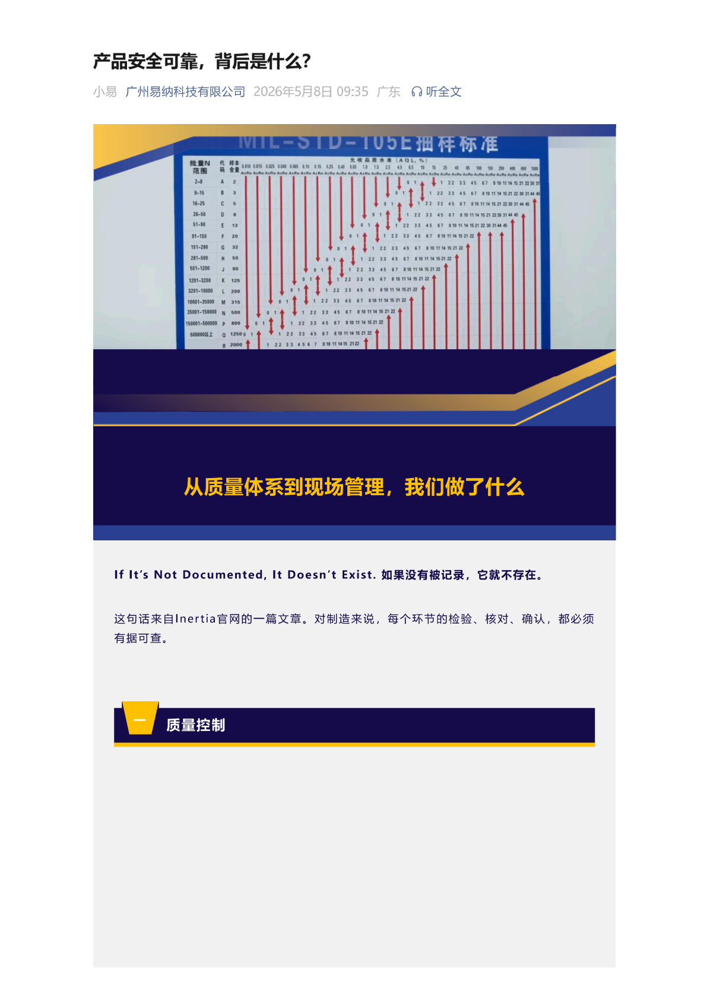
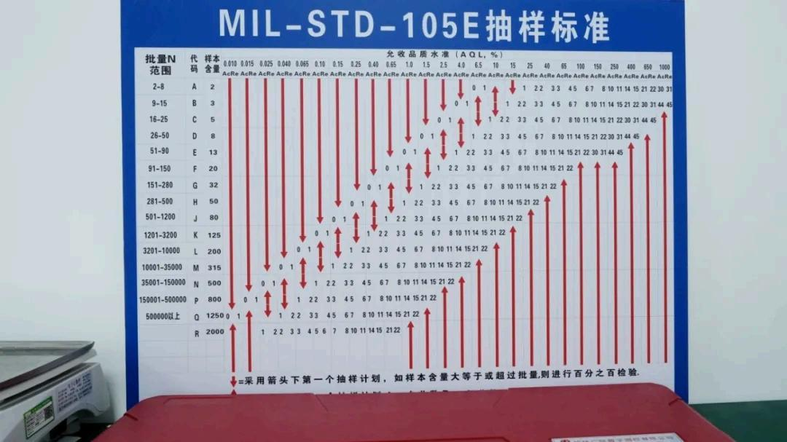
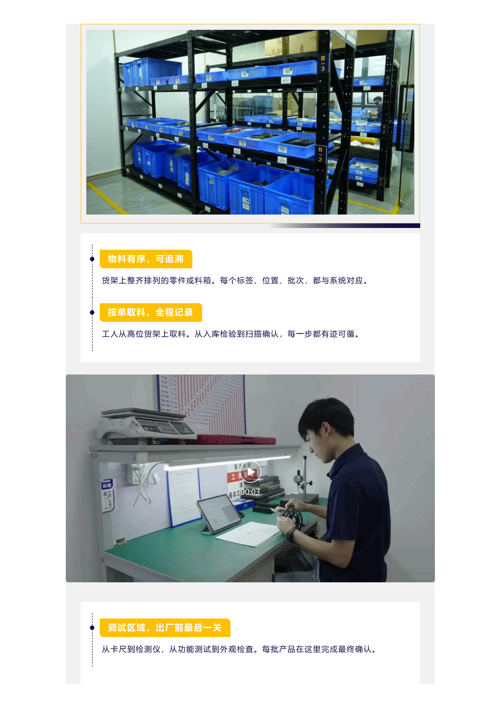
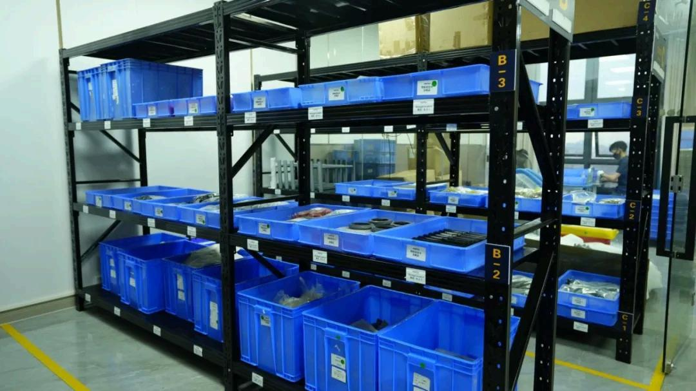
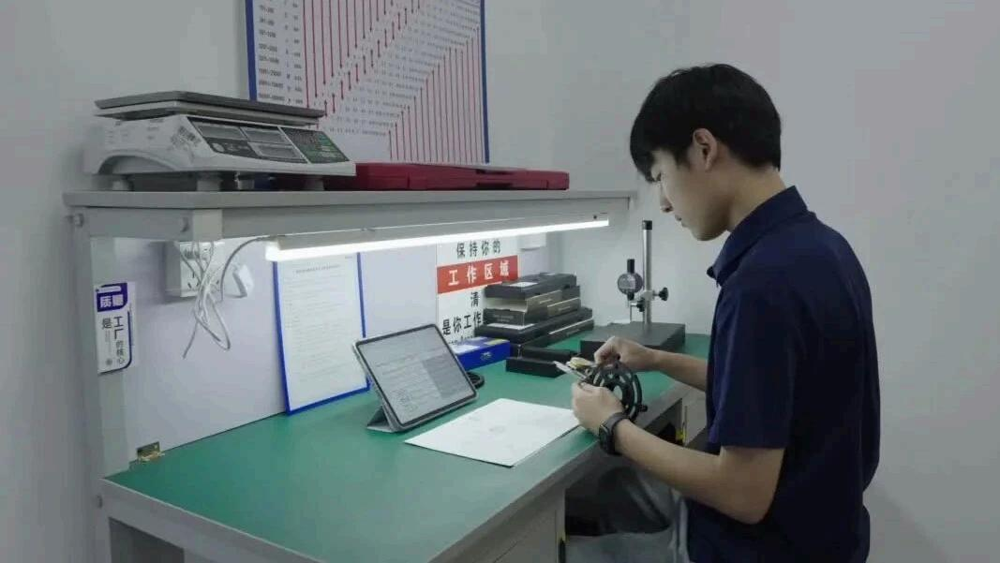
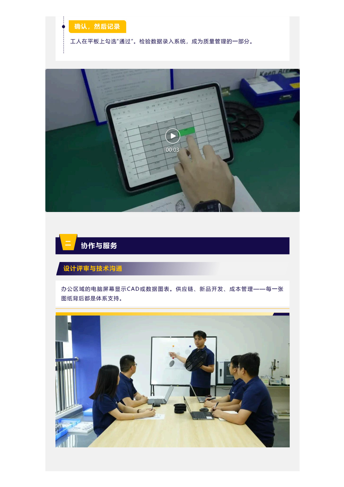
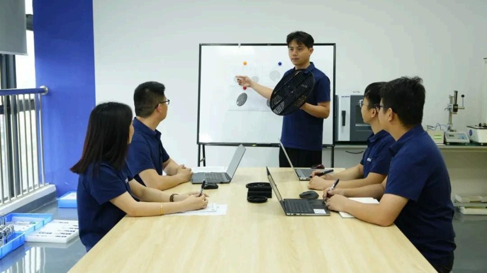
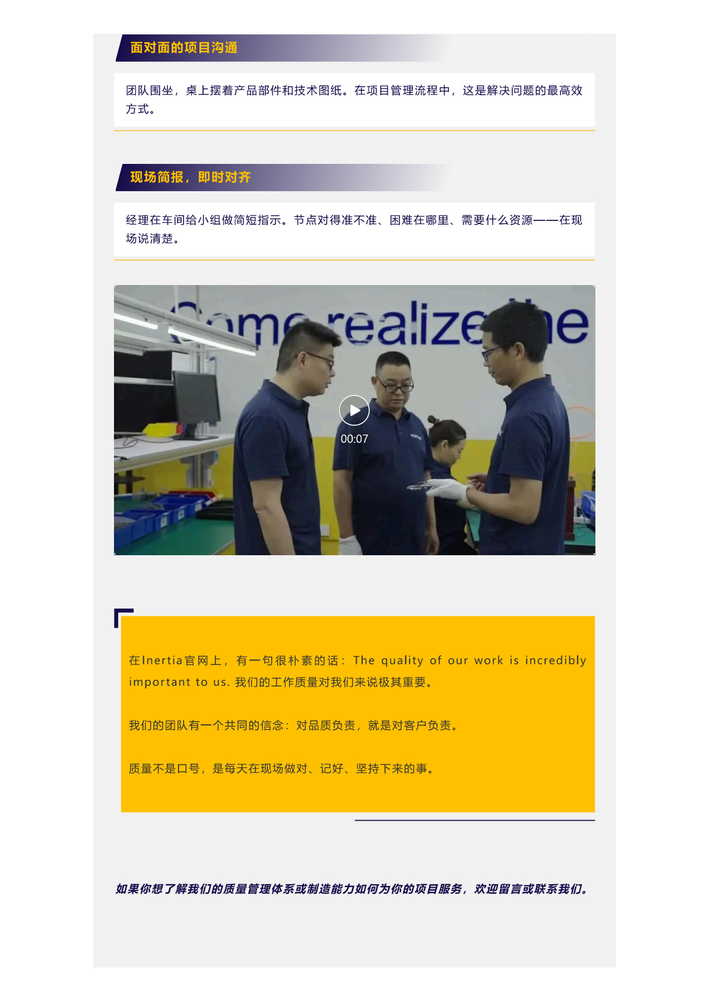
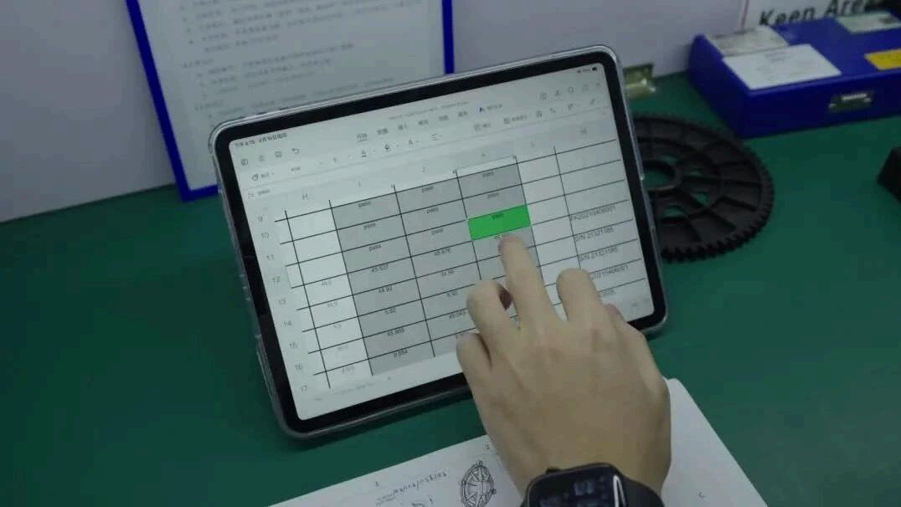
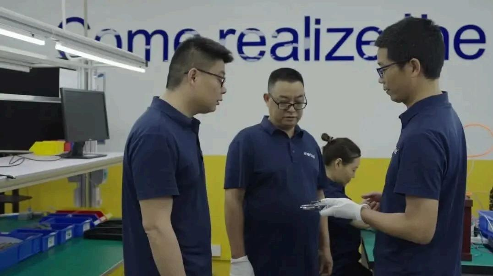

At Inertia, we know this deeply: behind every medical device is a human life. Product safety isn't a technical metric — it is a non-negotiable baseline encoded in our DNA. This article reveals what a safe, reliable product actually goes through before it ever reaches a patient.

Product safety is not tested into existence. Many people assume product safety is just the final testing phase — run a few regulatory tests, get a passing report, and call it done. But real product safety is a systematic engineering endeavor that starts with the very first design stroke and runs through material selection, process development, production control, and post-market surveillance.

Part 1 Design Review: Safety Begins With the First Stroke
Roughly 80% of a product's safety is determined during the design phase. At Inertia, every project undergoes rigorous design review — DFMEA (Design Failure Mode and Effects Analysis), manufacturability review, material safety assessment, and user scenario analysis — identifying and eliminating safety hazards at the drawing-board level.

DFMEA is not a box-checking exercise. Our engineers systematically list every potential failure mode, evaluate its severity, occurrence frequency, and detectability, calculate the Risk Priority Number (RPN), and implement targeted design improvements. Safety is taken seriously from the very first sketch.

Part 2 Material Traceability: Every Gram Has an "ID Card"
Every material used in a medical device must have a clear "identity" and "provenance." Inertia has established a full-chain material traceability system — from supplier qualification audits and material batch records to incoming inspection reports and production issue records — enabling every gram of material entering the production line to be traced all the way back to the supplier's raw material source.



Traceability is the bedrock of medical device safety. Should any material-related anomaly arise, we can pinpoint the affected product batch scope, the implicated supplier lots, and the production work orders — all within hours — and swiftly initiate a recall or corrective action. This isn't a matter of reaction speed; it's a "safety gene" embedded at the system design level.

Part 3 Process Validation: Making Every Parameter Evidence-Based
With a safe design and reliable materials, you still need validated processes to ensure consistent product quality. Inertia performs rigorous process validation on every critical operation — IQ (Installation Qualification), OQ (Operational Qualification), PQ (Performance Qualification) — ensuring process parameters consistently produce conforming products within established upper and lower limits.


Process validation is not a one-time exercise — it is a continuous endeavor. Whenever equipment is updated, materials change, or process parameters are adjusted, we reassess whether re-validation is required. At Inertia, we routinely monitor validated process states to ensure that "the product being made today is as consistently high-quality as the product validated yesterday."
Part 4 Quality Control: Every Product Withstands Scrutiny
Quality control is the final link in the product safety chain — yet it's the only link that consumers can "see." Inertia's quality control covers the full process: IQC guards the gate, IPQC oversees the process, FQC secures the exit. Layer upon layer of checks, link upon link of controls.

Product safety is not an outcome — it is a process. It doesn't live in the final test report; it lives in every design review meeting, on every material label, in every process parameter record, and in the eyes of every quality inspector.
The essence of safety is reverence. Medical device manufacturing is not like producing ordinary consumer goods — our products may appear in operating rooms, emergency departments, and ICUs. This "gravity of context" makes every Inertian keenly aware: we are not in ordinary manufacturing; we are in manufacturing that concerns human life.
Behind product safety and reliability lies design, materials, processes, quality control, and every Inertian's relentless pursuit of zero defects. It isn't a single test that makes a product safe — it's that from day one, we made safety our first principle. Because we know: every product we make will ultimately touch a human life.